01 / Spatial video
4D Splat Studio

02 / Interactive space
Room / 001
03 / Artificial life
Anima / 001

04 / Computational drawing
Palimpsest / 001
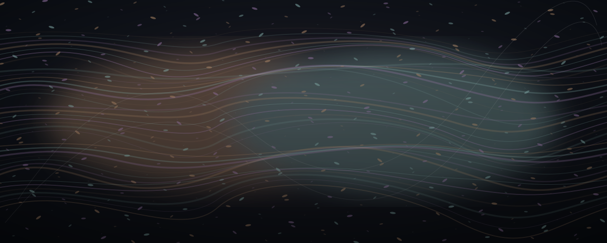
05 / Moving pigment
Field Study / 001
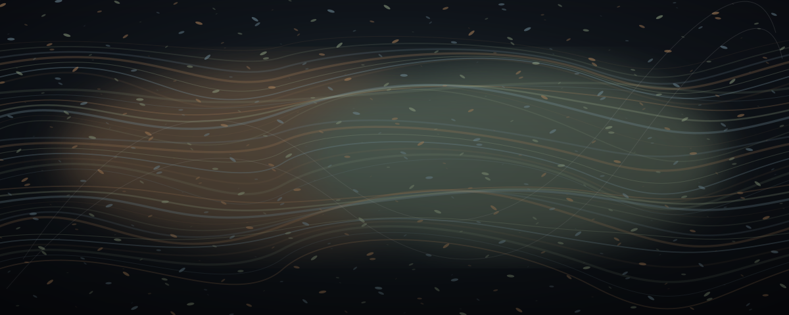
06 / Motion-driven pigment
Field Study / 002
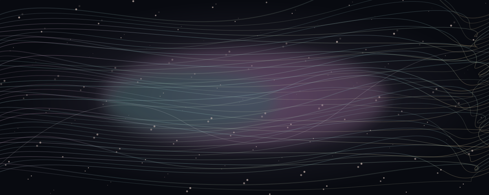
07 / Source only
Field Study / 003
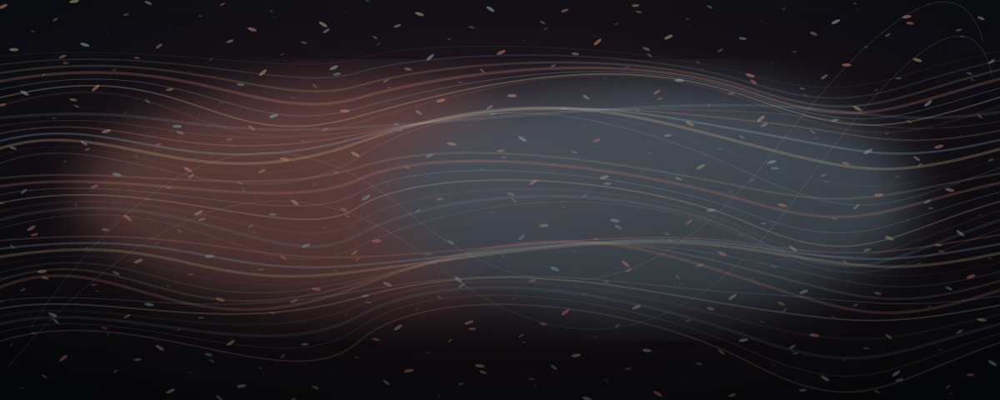
08 / Bristle-based pigment
Field Study / 004
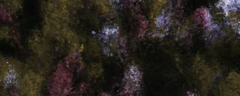
09 / Moving pigment / flowers
Field Study / 005
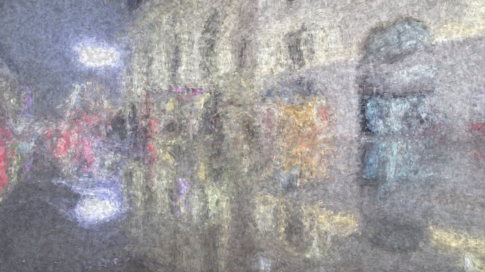
10 / Moving pigment / London
Field Study / 006 — London
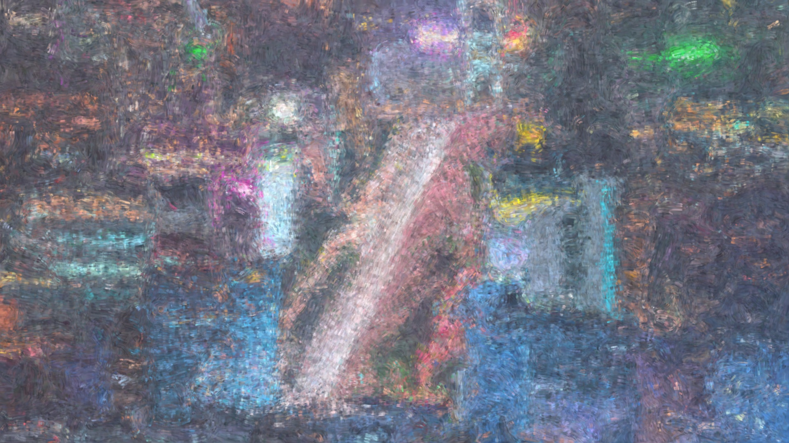
11 / Moving pigment / Taipei
Field Study / 006 — Taipei
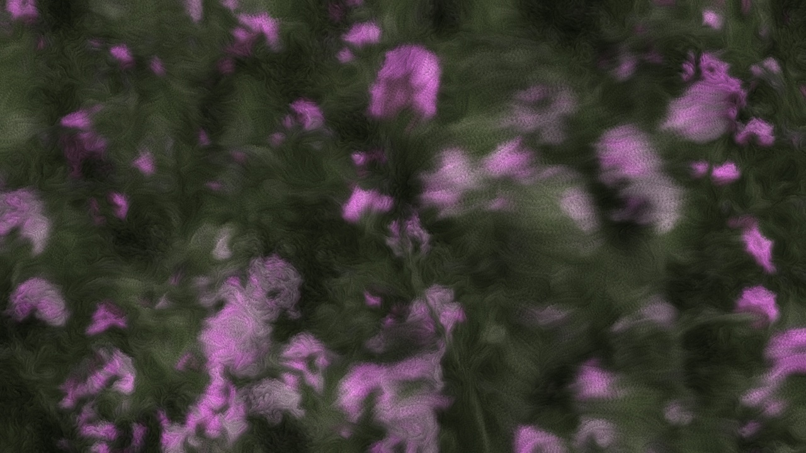
12 / Moving pigment / flowers
Field Study / 007
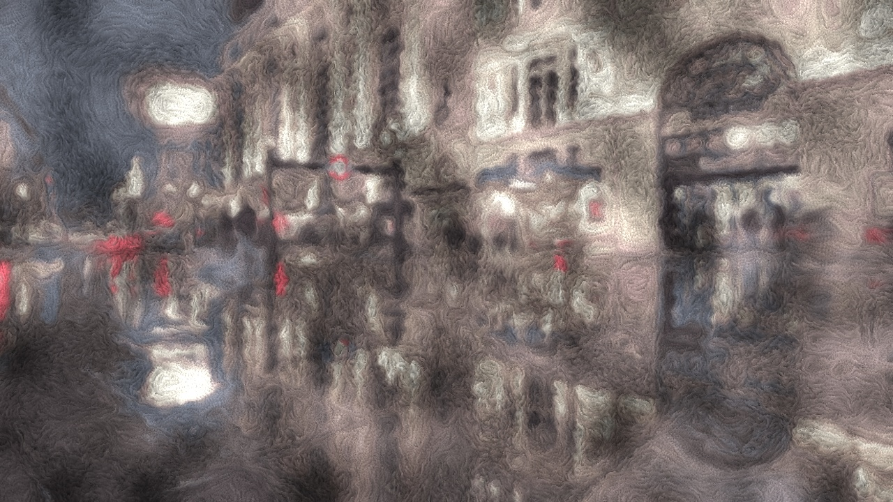
13 / Moving pigment / London
Field Study / 007 — London
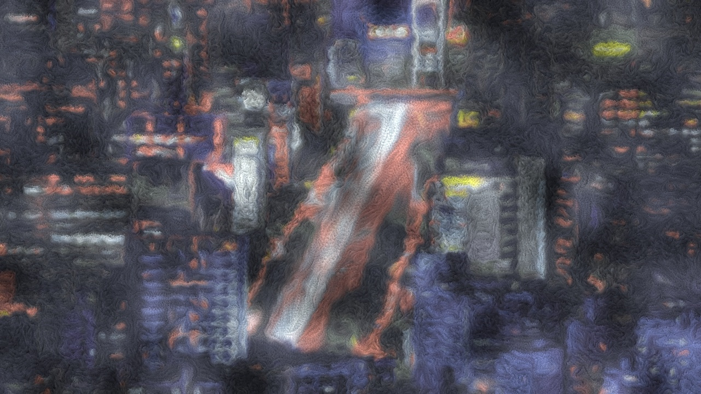
14 / Moving pigment / Taipei
Field Study / 007 — Taipei
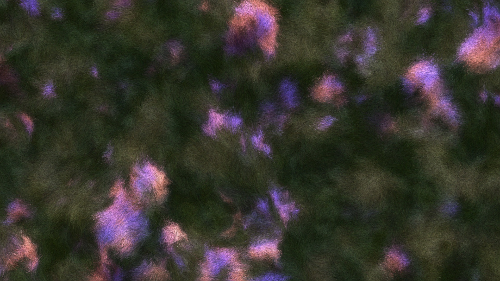
15 / Moving pigment / flowers
Field Study / 008
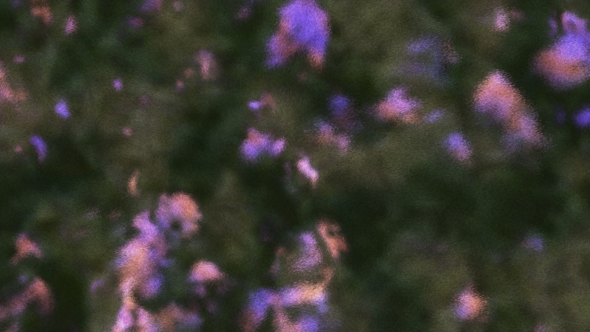
16 / Moving pigment / flowers
Field Study / 009
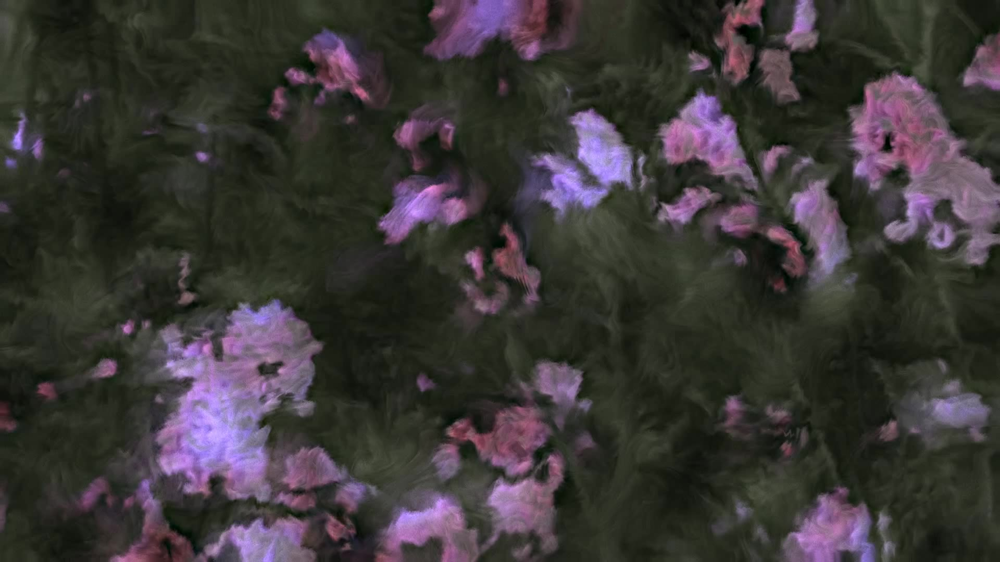
17 / Moving pigment / flowers
Field Study / 010
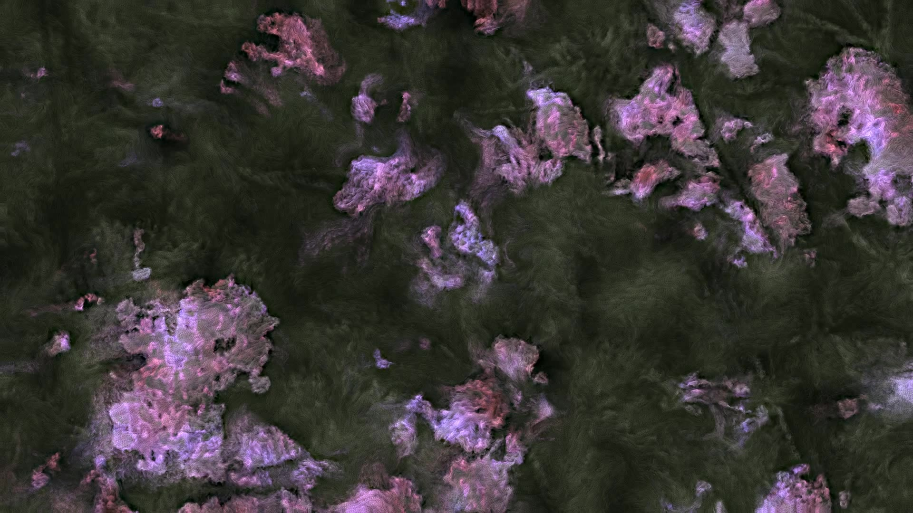
18 / Moving pigment / flowers
Field Study / 011
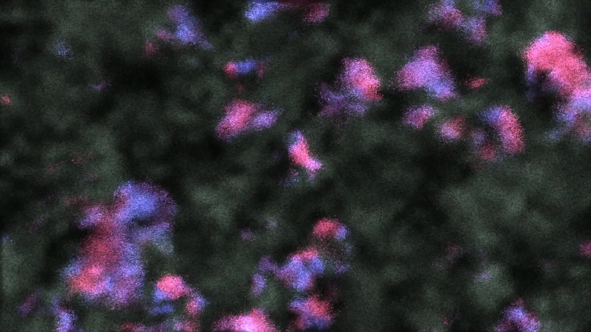
19 / Moving pigment / flowers